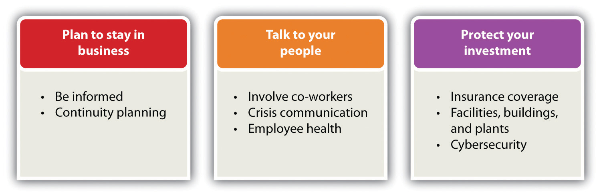

Source: Used with permission from John Bello.
John Bello and Tom Schwalm founded SoBe Beverages in Norwalk, Connecticut, in 1996. The name is an abbreviation of South Beach, the well-known upscale area in Miami, Florida. John describes SoBe as playfully irreverent, having brand equity with meaning, a cult brand that resonates in the marketplace. He attributes the company’s success to some luck, missteps by the competition, being aggressive, and tapping into a cultural shift.
SoBe tapped into a cultural shift toward healthier living and wellness and the rise of companies like General Nutrition that focused on wellness products: vitamins, supplements, minerals, and herbs. Their first product, Black Tea 3G, contained ginseng, guarana, and ginkgo. Orange Carrot, another of SoBe’s first successful products, is a blend of orange and carrot juices enhanced with calcium, chromium picolinate, and carnitine. An extensive line of other flavors was added. All ingredients were linked to specific health benefits.
The first two years of operation saw SoBe losing money, but by the end of 1997, the company was on fire. In five years, the company went from $0 to $300 million in sales, and it became a national brand. SoBe was competing effectively at a premium price. Coca-Cola, Pepsi, Arizona, and other brands took notice. Within three years, Coca-Cola was talking to SoBe about a possible strategic partnership. There were fifteen meetings, only two of which were with marketing. The rest were with corporate lawyers (John calls them “sales preventers”) and regulators. At the end of 1999, Minute Maid presented the proposal to the Coca-Cola board. Surprisingly, it was rejected. Coca-Cola saw no reason to go beyond carbonated soft drinks, and there were also some leadership issues. Back to square one.
John and Tom started looking at liquidation because of pressure from investors who wanted their money. But there were other reasons they thought about selling. They were not interested in managing a disparate group of investors—bankers, investors, and private equity companies. With 250 employees, the company was growing into something they did not want it to be—and they were not having as much fun. In 2000, the market was flattening, so with a big brand image, it was a good time to get out. They also wanted to get into larger markets, such as schools and golf clubs, but only big companies could get them into a broader marketplace. They hired an investment bank and again went into negotiations with Coca-Cola as a strategic partner. The situation became very complicated and frustrating. Ultimately, a deal with Coca-Cola was again a no-go.
All was not lost. Pepsi (and others) had expressed an interest. John made a presentation to forty people at Pepsi—rather than the multiple presentations he had to make to Coca-Cola—and within two weeks, they had a deal. SoBe was sold in 2000 to Pepsi for an impressive $370 million…a very nice return on an investment of $7 million in cash and $1 million in trade-out services. Part of the deal was that John would stay on at Pepsi for two years to manage the brand, but after one day, it was clear to him that he was not going to be managing anything. Things were moved into committee, and the corporate bureaucracy took over. John likened the experience to “Making Ho Chi Minh a general in the US Army,” that is, he had a very different way of doing things. He is independent, is unconventional, speaks his mind, and would rather do things and make them work—an approach that tends to be at odds with the culture in large corporations.
SoBe inspired a whole line of functional beverages that people like to buy to make them feel smarter, healthier, and sexier. The company helped to build careers that have lasted. John is very happy with his legacy…and with his piece of the $370 million sale price.
Source: Interview with John Bello, cofounder of SoBe, August 23, 2011.
Most textbooks on small business and entrepreneurship emphasize, quite correctly, the benefits and joys of owning and operating one’s own business. However, they often neglect to cover many of the challenges of continuing to operate a business successfully—the icebergs that can sink a business. The first half of this chapter covers one of the biggest icebergs: a natural or a man-made disaster and the disaster planning that should precede it. Being able to anticipate a disaster will contribute significantly to its effective handling so that a business can survive.
Even if a small business survives a disaster or another kind of iceberg, the owner may still wish to walk away. If a business does not survive, the owner will have no choice but to walk away. There may be other reasons forcing the owner to walk away, or escape, as well. The second half of this chapter discusses the forced escape and the other end of the spectrum—when things go so well that the business owner is ready to move on to another phase of his or her life. In both cases, an exit strategy will be required.
A natural or a man-made disaster is but the tip of the iceberg. Planning for the complexity of what lies below the tip is important for every small business. Small- to medium-sized businesses are the most vulnerable in the event of a disaster.“Planning Can Cut Disaster Recovery Time, Expense,” US Small Business Administration, accessed February 6, 2012, archive.sba.gov/idc/groups/public/documents/sba_homepage/serv_da_dprep_howtoprep.pdf. It has been estimated by the US Department of Labor that 40 percent of businesses never reopen following a disaster. At least 25 percent of the remaining companies will close within two years. The Association of Records Managers and Administrators estimated that over 60 percent of small businesses that experience a major disaster close by the end of two years.Darrell Zahorsky, “Disaster Recovery Decision Making for Small Business,” About.com, accessed February 6, 2012, sbinformation.about.com/od/disastermanagement/a/disasterrecover.htm.
Given these odds, planning for disaster recovery makes great sense—even if, in the end, walking away makes the most sense. If a small business owner decides to rebuild, the process can begin after human health and safety are restored, the electricity is back on, and transportation is up and running. Everyone will want life to return to normal following the destruction, but that may not be possible for every small business. The market may change. Conditions may change, and a business must change to succeed in disaster recovery.Darrell Zahorsky, “Disaster Recovery Decision Making for Small Business,” About.com, accessed February 6, 2012, sbinformation.about.com/od/disastermanagement/a/disasterrecover.htm.
In the film Apollo 13, astronauts and engineers went through seemingly endless simulations of what might go wrong on a flight to the moon. The astronauts complained that some of the scenarios were unrealistic and almost impossible to occur. But when a near disaster occurred on Apollo 13, the engineers and astronauts were confronted with a problem that had never been considered; however, because of their prior experience with disaster training, they were able to develop a solution.
Rather than being negative, anticipating what can go wrong can be profoundly positive through either prevention or quickly responding to a crisis. The wise small business owner should appreciate Murphy’s Law (“Anything that can go wrong will go wrong”) and Murphy’s first corollary (“And it will go wrong at the worst possible moment”). The most pragmatic small business owner will also realize that Murphy was an optimist.
The Federal Emergency Management Agency declared 741 natural disasters in the United States for the period 2000 to 2011. Of that number, 66 percent were declared across the following six states: Texas (#1), California, Oklahoma, New York, Florida, and Louisiana (#6). However, every state and territory was represented.“Declared Disasters by Year and State,” Federal Emergency Management Agency, accessed February 6, 2012, www.fema.gov/news/disaster_totals_annual.fema. Planning for the aftermath of severe storms, flooding (e.g., perhaps snow melts too fast), fire, a hurricane or a tornado, a terrorist attack, or—in some areas—an earthquake is the key to getting back to business with a minimum of disruption. Not all businesses will face the same likelihood of these disasters occurring, but everyone faces the possibility of fire, severe storms, and flooding. Every situation will be unique, with the complexity of issues depending on the particular industry, size, location, and scope of a business.“Planning Can Cut Disaster Recovery Time, Expense,” US Small Business Administration, accessed February 6, 2012, archive.sba.gov/idc/groups/public/documents/sba_homepage/serv_da_dprep_howtoprep.pdf. The widespread nature of a the typical disaster means that public services, such as police, fire fighters, and medical assistance, will be unable to reach everyone right away. A business might be going it alone for a while.F. John Reh, “Survive the Unthinkable through Crisis Planning,” About.com, accessed February 6, 2012, management.about.com/cs/communication/a/PlaceBlame1000.htm.
According to a recent poll conducted by the National Federation of Independent Business, man-made disasters affect 10 percent of small businesses, and natural disasters have impacted more than 30 percent of all small businesses in the United States.Darrell Zahorsky, “Disaster Recovery Decision Making for Small Business,” About.com, accessed February 6, 2012, sbinformation.about.com/od/disastermanagement/a/disasterrecover.htm. Man-made disastersA disastrous event caused directly and principally by one or more identifiable deliberate or negligent human actions. are disastrous events caused directly and principally by one or more identifiable deliberate or negligent human actions.“Man-Made Disaster,” BusinessDictionary.com, accessed February 6, 2012, www.businessdictionary.com/definition/man-made-disaster.html. They include such things as arson, radiation contamination, terrorism, structural collapse due to engineering failures, civil disorder, and industrial hazards.“Anthropogenic Hazard,” Wikipedia, accessed February 6, 2012, en.wikipedia.org/wiki/List_of_man-made_disasters. The better prepared a business is, the faster it will be able to recover and resume operations…if that is the decision. Having a disaster plan can mean the difference between being shut down for a few days and going out of business entirely.“Disaster Preparedness: FAQs,” US Small Business Administration, accessed February 6, 2012, sbaonline.sba.gov/services/disasterassistance/disasterpreparedness/serv_da _dprep_howcaniprep.html.
Joe Bogner of Dodge City, Kansas, learned the importance of disaster planning firsthand. He owns Western Beverage, Inc., a beverage distribution company serving twenty-nine counties in western Kansas. In 2002, Western Beverage sustained millions of dollars in fire damage. Yet the company resumed deliveries after just three days. Bogner was named the Kansas City Small Businessperson of the Year for 2006, partially because of his company’s ability to respond to adversity. As his nomination package stated, “Setting up plans of action and following through are Joe’s way of life. He has proven and is continuing to prove that dreams can come true.”“Planning Can Cut Disaster Recovery Time, Expense,” US Small Business Administration, accessed February 6, 2012, archive.sba.gov/idc/groups/public/documents/sba_homepage/serv_da_dprep_howtoprep.pdf.
Four key facts about disaster planning must be kept in mind: (1) disasters will occur, (2) an owner must have a plan before the disaster occurs, (3) react with urgency but do not panic, and (4) ride it out.F. John Reh, “Survive the Unthinkable through Crisis Planning,” About.com, accessed February 6, 2012, management.about.com/cs/communication/a/PlaceBlame1000.htm. If an owner is committed to having a disaster plan for a business, the plan and process can be structured in a variety of ways. For this section, however, the recommendations on Ready.gov serve as the structure for our discussion. These recommendations reflect the Emergency Preparedness Business Continuity Standard (NFPA 1600) developed by the National Fire Protection Association and endorsed by the American National Standards Institute and the Department of Homeland Security.“Plan For and Protect Your Business,” Ready.gov, accessed February 29, 2012, www.ready.gov/business. The recommendations are divided into three areas: plan to stay in business, talk to the people, and protect the investment. The topics discussed here are presented in Figure 14.1 "Disaster Planning". They have the greatest immediacy for a small business.
Figure 14.1 Disaster Planning
Source: http://www.ready.gov/business.
A business owner has invested a tremendous amount of time, money, resources, and emotions into building a business, so he or she will want to be able to survive a natural or man-made disaster. This requires taking a proactive approach so that the chances of the business surviving are increased. Unfortunately, nothing can be done to guarantee the survival of a business because there is no way to know what kind of disaster may occur—or when. There is also no way to know what kind of business environment the owner will face after the disaster. There are, however, several things can be done to increase those chances of survival. Resist the temptation to put emergency planning on the back burner.
It is important to look realistically at the types of disasters that might affect a business internally and externally and prepare a risk assessment. Consider the natural disasters that are most common in the areas where the business operates and think about the business’s vulnerability to man-made disasters. Fires are the most common disasters in the United States, and they are extremely destructive to businesses,“Fires,” American Red Cross, accessed February 6, 2012, www.sdarc.org/HowWeHelp/DisasterPreparedness/Fire/tabid/81/Default.aspx. but an owner may not be aware that a community is very vulnerable to flooding from snow melt or that the proximity to a chemical plant makes a business vulnerable to the results of explosions. This is why it is important to prepare a risk assessment so that the business can plan accordingly.
It is said that a business continuity plan is the least expensive insurance any business can have—especially a small business—because it costs virtually nothing to produce.“How to Create a Business Continuity Plan,” wikiHow, accessed February 6, 2012, www.wikihow.com/Create-a-Business-Continuity-Plan. The better the continuity planning is before a disaster, the greater the chances that a business will survive and recover. There are many things that can be done.“Plan For and Protect Your Business,” Ready.gov, accessed February 29, 2012, www.ready.gov/business; “How to Create a Business Continuity Plan,” wikiHow, accessed February 6, 2012, www.wikihow.com/Create-a-Business-Continuity-Plan. The following is not an exhaustive list:
Without good communication, the internal and external structure of a business—and its daily operations—will face challenges that may ultimately lead to its downfall.Kristie Lorette, “Importance of Good Communication in Business,” Chron.com, accessed February 6, 2012, smallbusiness.chron.com/importance-good -communication-business-1403.html. Strong communication skills are, therefore, a vital part of business success. When first starting out, the owner will need good communication skills to attract and keep new customers. As the business grows and new employees are required, these skills will be needed to hire, motivate, and retain good staff.Leslie Schwab, “Small Business: The Importance of Strong Communication Skills,” Helium, June 20, 2009, accessed February 6, 2012, www.helium.com/items/1486526-strong-communication-skills-are-required-for-success-in-small-business. It is for this reason that the employees of a business should play a central role in creating a disaster plan.
Providing for the well-being of all employees is one of the best ways to ensure that a business will recover from a disaster. A business must be able to communicate with them before, during, and after a disaster. There are several recommendations for doing this, including the following:“Plan For and Protect Your Business,” Ready.gov, accessed February 29, 2012, www.ready.gov/business.
The owner must decide how the business will contact suppliers, creditors, other employees, local authorities, customers, media, and utility companies during and after the disaster. One easy way to do this is to assign key employees to make designated contacts. Provide a list of these key employees and contacts to each affected employee and keep a copy with other protected contacts. Each key employee should also keep a copy of the list at home. In addition,“Plan For and Protect Your Business,” Ready.gov, accessed February 29, 2012, www.ready.gov/business. do the following:
Disasters often result in business disorientation and environmental detachment, with the psychological trauma of key decision makers leading to company inflexibility (perhaps inability) to deal with the change required to move forward.Darrell Zahorsky, “Disaster Recovery Decision Making for Small Business,” About.com, accessed February 6, 2012, sbinformation.about.com/od/disastermanagement/a/disasterrecover.htm. If the owner or other key personnel experience posttraumatic stress disorder, it can cripple a business’s decision-making ability.
No matter the disaster, there will be psychological effects (e.g., fear, stress, depression, anxiety, and difficulty in making decisions) as well as—depending on the nature of the disaster—physical effects such as injuries, burns, exposure to toxins, and prolonged pain.John H. Ehrenreich, “Coping with Disasters: A Guidebook to Psychosocial Intervention,” Toolkit Sport for Development, October 2001, accessed February 6, 2012, www.toolkitsportdevelopment.org/html/resources/7B/7BB3B250-3EB8-44C6-AA8E -CC6592C53550/CopingWithDisaster.pdf. As a result, the owner and the employees may have special recovery needs. To support those needs, do the following:“Plan For and Protect Your Business,” Ready.gov, accessed February 29, 2012, www.ready.gov/business.
Last but certainly not least, take steps to protect the business and secure its physical assets. Among the things that can be done, having appropriate insurance coverage; securing facilities, buildings, and plants; and improving cybersecurity are at the top of the list.
Having inadequate insurance coverage can leave a business vulnerable to a major financial loss if it is damaged, destroyed, or simply interrupted for a period of time. Because insurance policies vary, meet with an insurance agent who understands the needs of a particular business.“Insurance Coverage Review Worksheet,” Ready.gov, accessed February 6, 2012, www.ready.gov/sites/default/files/documents/files/InsuranceReview_Worksheet.pdf.
One cannot predict what will happen in the case of a disaster, but there are steps that can be taken in advance to help protect a business’s physical assets, including the following:“Plan For and Protect Your Business,” Ready.gov, accessed February 29, 2012, www.ready.gov/business.
Many, perhaps most, small businesses will have data and IT systems that may require specialized expertise. They need to be protected. The industry, size, and scope of a business will determine the complexity of cybersecurity, but even the smallest business can be better prepared.“Plan For and Protect Your Business,” Ready.gov, accessed February 29, 2012, www.ready.gov/business. Small businesses are the most vulnerable to cybersecurity breaches because they have the weakest security systems, thereby making them easier online targets.“CyberSecurity by Chubb,” Chubb Group of Insurance Companies, accessed February 6, 2012, www.chubb.com/businesses/csi/chubb822.html.
Chubb Group of Insurance Companies
The Chubb Group of Insurance Companies provides a very good video discussion of cybersecurity.
Every computer can be vulnerable to attack. The consequences can range from simple inconvenience to financial catastrophe.“Plan For and Protect Your Business,” Ready.gov, accessed February 29, 2012, www.ready.gov/business. There are several things that can be done to protect a business, its customers, and its vendors, including the following:“Plan For and Protect Your Business,” Ready.gov, accessed February 29, 2012, www.ready.gov/business; “Cyber Security Liability Insurance,” Wall Street Journal, March 18, 2010, as cited in Robert Hess and Company Insurance Brokers, May 6, 2010, accessed February 6, 2012, robhessco.com/183/cyber-security-liability-insurance/; Eric Schwartzel, “Cybersecurity Insurance: Many Companies Continue to Ignore the Issue,” Pittsburg Post-Gazette, June 22, 2010, accessed February 6, 2012, www.post-gazette.com/pg/10173/1067262-96.stm.
Frank’s BarBeQue just missed being impacted by a tornado that ripped through southwestern Connecticut. Many small businesses were lost, never to reopen, while others sustained major physical and economic damage. Frank’s son, Robert, asked his father about whether he was prepared for something like that. Frank’s response was troubling. Although he kept some important documents in a safety deposit box at the bank, there was little planning or protection. Robert explained the importance of disaster planning, but Frank was overwhelmed by the prospect of the process.
Robert contacted a local university and arranged with its school of business for a team of five students to prepare a disaster plan for Frank’s BarBeQue. He presented the project idea to his father and was relieved that his dad was willing to participate. It was clearly understood that no proprietary or confidential information would be shared with the students.
Do not assume that all small businesses will qualify for disaster loan assistance or that insurance will cover the costs of all losses. A small business owner may have to depend on other forms of financial assistance—for example, savings, friends, and family.Darrell Zahorsky, “Disaster Recovery Decision Making for Small Business,” About.com, accessed February 6, 2012, sbinformation.about.com/od/disastermanagement/a/disasterrecover.htm. However, if a small business has sustained economic injury after a disaster, it may be eligible for financial assistance from the Small Business Administration (SBA). If a business is located in a declared disaster area, the owner may apply for a long-term, low-interest loan to repair or replace damaged property.“Disaster Assistance For Businesses of All Sizes,” US Small Business Administration, accessed February 28, 2012, archive.sba.gov/idc/groups/public/documents/sba_homepage/serv_da _dprep_factsheethome.pdf.
In the case of a physical disaster, a small business owner may apply for a low-interest SBA loan of up to $2 million to repair or replace damaged real estate, equipment, inventory, and fixtures: “The loan may be increased by as much as 20 percent of the total amount of disaster damage to real estate and/or leasehold improvements, as verified by SBA, to protect property against future disasters of the same type. These loans will cover uninsured and or under-insured losses.”“Disaster Assistance For Businesses of All Sizes,” US Small Business Administration, accessed February 28, 2012, archive.sba.gov/idc/groups/public/documents/sba_homepage/serv_da _dprep_factsheethome.pdf. It is also possible that small business disaster relief loans may be available at the local, county, regional, or state level.See, for example, the small business loans that are available through the Union County Economic Development Corporation (Union, New Jersey) for disaster assistance: scotchplains.patch.com/articles/union-county-makes-small-business-loans -available.
The SBA can also help small businesses that were not damaged physically but have suffered economically.“Demand Grows for Disaster Loans,” Wall Street Journal, September 7, 2011, accessed February 6, 2012, blogs.wsj.com/in-charge/2011/09/07/demand-grows-for-disaster -loans/?mod=google_news_blog. An Economic Injury Disaster Loan of up to $2 million can be granted to meet necessary financial obligations—expenses the business would have paid if the disaster had not occurred.
The interest rate on both Physical and Economic Injury Disaster Loans will not exceed 4 percent if you do not have credit available elsewhere. Repayment can be up to 30 years, but this will depend on the business’s ability to repay the loan. For businesses that may have credit available elsewhere, the interest rate will not exceed 8 percent. SBA determines whether the applicant has credit available elsewhere.“Disaster Assistance For Businesses of All Sizes,” US Small Business Administration, accessed February 28, 2012, archive.sba.gov/idc/groups/public/documents/sba_homepage/serv_da _dprep_factsheethome.pdf.
The Internal Revenue Service (IRS) provides some disaster assistance and emergency relief for businesses through special tax law provisions, especially when the federal government declares their location to be a major disaster area. The IRS may grant additional time to file returns and pay taxes. While doing disaster planning, check the latest special tax law provisions that may help a business recover financially from the impact of a major disaster.“Disaster Assistance and Emergency Relief for Individuals and Businesses,” Internal Revenue Service, accessed February 6, 2012, www.irs.gov/businesses/small/article/0,,id=156138,00.html. It would also be a good idea to check out what kind of record keeping the IRS requires so that a business will be fully prepared should it be necessary to take advantage of what the IRS offers.
Disaster recovery will push the limits of a small business…and then some. Locate the closest offices of SCORE (Service Corps of Retired Executives)A nonprofit association dedicated to educating entrepreneurs and helping small businesses start, grow, and succeed nationwide.—a nonprofit association dedicated to educating entrepreneurs and helping small businesses start, grow, and succeed nationwide—and enlist their support. SCORE provides confidential business counseling services at no charge.“About SCORE,” SCORE, accessed February 6, 2012, www.score.org/about-score.
DisasterAssistance.gov is a one-stop web portal, self-described as access to disaster help and resources, that details over sixty different forms of assistance from seventeen US government agencies where a business owner can apply for SBA loans through online applications, receive referral information on forms of assistance that do not have online applications, or check the progress and status of online applications.“Disaster Assistance and Emergency Relief for Individuals and Businesses,” Internal Revenue Service, accessed February 6, 2012, www.irs.gov/businesses/small/article/0,,id=156138,00.html; “What Is DisasterAssistance.gov,” DisasterAssistance.gov, accessed February 6, 2012, www.disasterassistance.gov.
Benefits.gov wants to let survivors and disaster relief workers know about the many disaster relief programs that are available. There are questions for a small business owner who has suffered damage because of a natural disaster to answer to find out which government benefits the business may be eligible to receive. The site also provides a link to DisasterAssistance.gov.“Disaster Assistance and Emergency Relief for Individuals and Businesses,” Internal Revenue Service, accessed February 6, 2012, www.irs.gov/businesses/small/article/0,,id=156138,00.html; “Looking for Benefits?,” accessed February 6, 2012, www.benefits.gov.
There are many reasons why an owner might want to walk away from a business; the choice is oftentimes the owner’s. Perhaps the owner wants to sell the business before retirement. Perhaps someone has approached the owner with a terrific offer. Perhaps investors are pressuring the owner for their money. Perhaps no one in the owner’s family wants to take over the business. Perhaps it is no longer fun; the entrepreneurial spirit is gone, and the owner’s passion has changed. It could be that either the owner or the team is not committed to making things work.“Knowing When to Throw in the Towel,” Fox Business, May 2, 2011, accessed February 6, 2012, smallbusiness.foxbusiness.com/entrepreneurs/2011/05/02/knowing -throw-towel. Perhaps the owner would like to cash out the equity built in the business.Timothy Faley, “Making Your Exit,” Inc., March 1, 2006, accessed February 6, 2012, www.inc.com/resources/startup/articles/20060301/tfaley.html; “Knowing When to Throw in the Towel,” Fox Business, May 2, 2011, accessed February 6, 2012, smallbusiness.foxbusiness.com/entrepreneurs/2011/05/02/knowing-throw-towel. There are many other reasons as well:
There will also be those times when walking away from a business may not be the owner’s choice.
The owner wants no one else to run the business and is unwilling to give up equity. Every small business founder faces the founder’s dilemmaThe choice between making money or controlling and running a business.—that is, the dilemma between making money and controlling the business.Dan Bigman, “On the Hunt,” Forbes 185, no. 2 (2009): 56–59. It is tough to do both because they tend to be incompatible goals. Founders often make decisions that conflict with maximizing wealth.Noam Wasserman, “The Founder’s Dilemma,” Harvard Business Review, February 2008, 1–8. If an owner wants to make a lot of money from a business, the owner will need to give up more equityThe amount of money invested in a firm. (the money put into the business) to attract investors, which requires relinquishing control as equity is given away; investors may alter the board membership of a business.Noam Wasserman, “The Founder’s Dilemma,” Harvard Business Review, February 2008, 1–8. To retain control of a business, the owner will have to keep more equity, relying on his or her own capital instead of taking money from investors. The result will be less capital to increase a company’s value, but he or she will be able to run the company.Noam Wasserman, “The Founder’s Dilemma,” Harvard Business Review, February 2008, 1–8.
In a recent study of 212 new ventures, it was found that in three years, 50 percent of the founders were no longer the CEO, only 20 percent were still “in the corner office,” and fewer than 25 percent led their company’s initial public offering (IPO). Four out of five found themselves being forced to step down at some point.Dan Bigman, “On the Hunt,” Forbes 185, no. 2 (2009): 56–59; Noam Wasserman, “The Founder’s Dilemma,” Harvard Business Review, February 2008, 1–8. Although specific to new ventures, this information has a clear message for all small business founders/owners: wanting to make a lot of money while still controlling and running the business are not compatible goals. One must decide which goal is most important, understanding that the choice of letting someone else run the business will likely result in being forced to step down…and perhaps out of the business altogether.
The decision to walk away from a business—whether that decision is voluntary or forced—is not an easy one to make. Consult with an appropriate mix of individuals; a partner or partners if applicable, your spouse, your family, an attorney, an accountant, and perhaps someone from SCORE. Each individual can offer a different perspective and different counsel. Ultimately, however, the decision is the owner’s.
One thing is for certain. Whether the escape is voluntary or forced, there should be an exit strategy.
The most emotional topic a small business owner will face while building a business—and the hardest decision to make—is when and how to exit the business. This very personal decision should be considered while building the business because this decision will impact many other decisions made along the way.Timothy Faley, “Making Your Exit,” Inc., March 1, 2006, accessed February 6, 2012, www.inc.com/resources/startup/articles/20060301/tfaley.html. Ultimately, however, an exit strategy must be developed whether or not it is considered along the way. The strategy should be developed early in the business, and it should be reviewed and changed periodically because conditions change. Unfortunately, many small business owners have no exit strategy. This will make an already very emotional decision and process even more difficult.
There are many exit strategies that a small business owner can consider. Liquidation or walk away, family succession, selling the business, bankruptcy, and taking the company public are discussed here. Selecting an exit strategy is important because the way in which an owner exits can affect the following:“Consider Your Exit Strategy When Starting Up: Why You Need an Exit Strategy,” Business Link, accessed February 6, 2012, www.businesslink.gov.uk/bdotg/action/detail?itemId=1073792644&type=RESOURCES.
Figure 14.4 Possible Exit Strategies

The best exit strategy (see Figure 14.4 "Possible Exit Strategies") is the one that is the best match to a small business and the owner’s personal and professional goals. The owner must first decide what he or she wants to walk away with—for example, money, management control, or intellectual property. If interested only in money, selling the business on the open market or to another business may be the best choice. If, on the other hand, one’s legacy and seeing the small business continue are important, family succession or selling the business to the employees might be a better solution.Susan Ward, “Exit Strategies for Your Small Business,” About.com, accessed June 1, 2012, sbinfocanada.about.com/od/businessplanning/a/exitstrategies.htm.
There are times when a small business owner may decide that enough is enough, so he or she simply calls it quits, closes the business doors, and calls it a day.Stever Robbins, “Exit Strategies for Your Business,” Entrepreneur, June 27, 2005, accessed February 6, 2012, www.entrepreneur.com/article/78512. This happens all the time, to hundreds of businesses every day—for example, a small shop, a restaurant, a small construction company, a shoe store, a gift shop, a consignment shop, a nail salon, a bakery, or a video store.Andrew Clarke, “Exit Strategies for Small Business Owners,” Experts.com, 2006, accessed February 6, 2012, www.experts.com/Articles/Exit-Strategies-for-Small -Business-Owners-By-Andrew-Clarke. This closing of the business involves liquidationThe sale of a business’s assets., the selling of all assets. If all debts are paid, it can also be referred to as a walkawayA small business that is closed with all debts paid..
To make any money with the liquidation exit strategy, a business must have valuable assets to sell—for example, land or expensive equipment. The name of the business may have some value, so it could be purchased by someone for pennies on the dollar and restarted with different owners. There is also a possibility that there may be a substantial amount of goodwill or even badwill if a business has been around for a long time. GoodwillAn intangible asset that reflects the value of intangible assets, such as a strong brand name, good customer relations, good employee relations, patents, intellectual property, the size and the quality of the customer list, and market penetration. is an intangible asset that reflects the value of intangible assets, such as a strong brand name, good customer relationships, good employee relationships, patents, intellectual property, size and quality of the customer list, and market penetration.“Goodwill,” Investopedia, accessed February 6, 2012, www.investopedia.com/terms/g/goodwill.asp. However, if a business is simply closed, the value of the goodwill will drop, and the selling price will be lower than it would have been prior to the business being closed.Andrew Clarke, “Exit Strategies for Small Business Owners,” Experts.com, 2006, accessed February 6, 2012, www.experts.com/Articles/Exit-Strategies-for-Small -Business-Owners-By-Andrew-Clarke.
BadwillThe negative effect felt by a company when it is found out that a company has done something not in accord with good business practices. is the negative effect felt by a company when it is found out that a company has done something not in accord with good business practices. Although badwill is typically not expressed in a dollar amount, it can result in such things as decreased revenue; the loss of clients, customers, and suppliers; the loss of market share; the loss of credit; federal or state indictments for crimes committed, and censure by the community.“Badwill,” Investopedia, accessed February 6, 2012, www.investopedia.com/terms/b/badwill.asp. For the small business owner who wants to close under these circumstances, there will be nothing much to sell but tangible assets because the business will have very little, if any, market value.
In all instances of liquidation, the proceeds from the sale of assets must first be used to repay creditors. The remaining money is divided among the shareholders (if any), the partners (if any), and the owner.Stever Robbins, “Exit Strategies for Your Business,” Entrepreneur, June 27, 2005, accessed February 6, 2012, www.entrepreneur.com/article/78512. In an ideal walkaway situation, the following occurs:Jerome A. Katz and Richard P. Green, Entrepreneurial Small Business (New York: McGraw-Hill Irwin, 2009), 663.
The walkaway is the cleanest and best way to exit, but it is not always possible for all businesses that decide to close their doors. There will, of course, always be those instances in which the owner closes the business and takes off, leaving a mess behind.
Any small business owner thinking about liquidation should consider the pros and cons, which are as follows:Andrew Clarke, “Exit Strategies for Small Business Owners,” Experts.com, 2006, accessed February 6, 2012, www.experts.com/Articles/Exit-Strategies-for-Small -Business-Owners-By-Andrew-Clarke; Stever Robbins, “Exit Strategies for Your Business,” Entrepreneur, June 27, 2005, accessed February 6, 2012, www.entrepreneur.com/article/78512.
Pros
Cons
Many small business owners dream of passing the business to a family member. Keeping the business in the family allows the owner’s legacy to live on, which is clearly an attractive option. Family succession as an exit strategy also allows the owner an opportunity to groom the successor; the owner might even retain some influence and involvement in the business if desired.Susan Ward, “Exit Strategies for Your Small Business,” About.com, accessed February 6, 2012, sbinfocanada.about.com/od/businessplanning/a/exitstrategies.htm. However, given that very few family firms survive beyond the first generation and even fewer survive into the third generation,Sue Birley, “Succession in the Family Firm: The Inheritor’s View,” Journal of Small Business Management 24, no. 3 (1986): 36–43; Manfred F. R. Kets de Vries, “The Dynamics of Family Controlled Firms: The Good News and the Bad News,” Organizational Dynamics 21, no. 3 (1993), 59–68; Michael H. Morris, Roy O. Williams, Jeffrey A. Allen, and Ramon A. Avila, “Correlates of Success in Family Business Transitions,” Journal of Business Venturing 12 (1997): 385–401. successionPassing the business to the next generation. is the most critical issue facing family firms.Wendy C. Handler, “Succession in Family Business: A Review of the Literature,” Family Business Review 7, no. 2 (1994): 133–57. Succession is the transference of leadership from one generation to the next to ensure continuity of family ownership of the business.Stanley M. Davis, “Entrepreneurial Succession,” Administrative Science Quarterly 13 (1968): 402–16, as cited in A. Bakr Ibrahim, Khaled Soufani, Panikkos Poutziouris, and Jose Lam, “Qualities of an Effective Successor: The Role of Education and Training,” Education and Training 46, no. 8/9 (2004): 474–80.
A sudden decision to hand over the business to a family member is unwise. The owner will be burdened with problems that will likely lead to business failure. Succession in family firms is a multistage, complex process that should begin even before the heirs enter the business, and effects extend beyond the point in time when they are named as successors. Many factors are involved, and the succession should evolve over a long period of time.A. Bakr Ibrahim, Khaled Soufani, Panikkos Poutziouris, and Jose Lam, “Qualities of an Effective Successor: The Role of Education and Training,” Education and Training 46, no. 8/9 (2004): 474–80; Katiuska Cabrera-Suarez, “Leadership Transfer and the Successor’s Development in the Family Firm,” The Leadership Quarterly 16 (2005): 71–96. Further, because succession is usually followed by changes in the organization, particularly the change in the top position, it is thought to be an indicator of the future of the business. The better prepared and committed the successor is, the greater the likelihood of a successful succession process and business.Katiuska Cabrera-Suarez, “Leadership Transfer and the Successor’s Development in the Family Firm,” The Leadership Quarterly 16 (2005): 71–96. The quality of interpersonal relationships, successors’ expectations, and the role of the predecessor are also relevant to success.Katiuska Cabrera-Suarez, “Leadership Transfer and the Successor’s Development in the Family Firm,” The Leadership Quarterly 16 (2005): 71–96.
The ideal is for the family business to have engaged in formal succession planningPlanning for the family business to be transferred to a family member or members.: planning for the family business to be transferred to a family member or members. The failure to plan for succession is seen as a fundamental human resource problem as well as the primary cause for the poor survival rate of family businesses.A. Bakr Ibrahim, Khaled Soufani, Panikkos Poutziouris, and Jose Lam, “Qualities of an Effective Successor: The Role of Education and Training,” Education and Training 46, no. 8/9 (2004): 474–80. Unfortunately, a very small percentage of family businesses plan appropriately for succession, and those that do frequently have mental, not written, plans.Stephan van der Merwe, Elmarie Venter, and Suria M. Ellis, “An Exploratory Study of Some of the Determinants of Management Succession Planning in Family Businesses,” Management Dynamics 18, no. 4 (2009): 2–17. A discussion of succession planning is in Chapter 3 "Family Businesses".
How to Pass On a Family Business
(click to see video)The owner of the Casanova Restaurant in Carmel, California, talks about his business and his hopes of passing it on to his children.
Feeling the need to file for bankruptcy is a tough pill for any small business owner to swallow. BankruptcyAn extreme form of business termination that uses a legal method for closing a business and paying off creditors when a business is failing and the debts are substantially greater than the assets. is an extreme form of business termination that uses a legal method for closing a business and paying off creditors when the business is failing and the debts are substantially greater than the assets.Jerome A. Katz and Richard P. Green, Entrepreneurial Small Business (New York: McGraw-Hill Irwin, 2009), 663. Because bankruptcy is a complicated legal process, it is important to get an attorney involved as soon as possible. There may be options other than bankruptcy, and consulting with an attorney will help. The owner must understand how bankruptcy works and the options that are available. It is also good to know that not all bankruptcies are voluntary; creditors can petition the court for a business to declare bankruptcy.“Bankruptcy,” US Small Business Administration, accessed February 6, 2012, www.sba.gov/content/bankruptcy.
Chapter 7 small business bankruptcy, more commonly referred to as liquidation, is appropriate when a business is failing, has no future, and has no substantial assets. This form of bankruptcy makes sense only if the owner wants to walk away. It is particularly suited to sole proprietorships and other small businesses in which the business is essentially an extension of its owner’s skills.Caron Beesley, “Bankruptcy Options for the Small Business Owner,” AllBusiness.com, February 5, 2009, accessed February 6, 2012, www.allbusiness.com/company-activities-management/company-structures-ownership/11772426-1.html; “Small Business Bankruptcy…You Have Choices,” Daniel B. James Group, accessed February 6, 2012, www.small-business-bankruptcy.com. Under Chapter 7 bankruptcy law, a trustee will take a business apart, selling assets to satisfy outstanding debts and discharging debts that cannot be satisfied with the assets that are available.Caron Beesley, “Bankruptcy Options for the Small Business Owner,” AllBusiness.com, February 5, 2009, accessed February 6, 2012, www.allbusiness.com/company-activities-management/company-structures-ownership/11772426-1.html; “Small Business Bankruptcy…You Have Choices,” Daniel B. James Group, accessed February 6, 2012, www.small-business-bankruptcy.com.
Chapter 11 small business bankruptcy allows an owner to run a business with court oversight. The owner loses control of the firm, but it continues to operate. The owner is protected from creditors in the short term because the court orders an automatic stay that prevents the creditors from seizing your assets. Unfortunately, the outcome is not pleasant. The owner is out as manager, and the creditors end up owning the business. If the owner cannot pay the $75,000+ in legal fees, the judge will probably order liquidation, so the result is the same as a Chapter 7.“Small Business Bankruptcy…You Have Choices,” Daniel B. James Group, accessed February 6, 2012, www.small-business-bankruptcy.com. This form of bankruptcy applies to sole proprietorships, corporations, and partnerships.Caron Beesley, “Bankruptcy Options for the Small Business Owner,” AllBusiness.com, February 5, 2009, www.allbusiness.com/company-activities-management/company-structures-ownership/11772426-1.html.
The amount that creditors can collect will depend on how a business is structured. If a business is a sole proprietorship, the owner’s personal assets may be used to pay off business debts, depending on the chosen bankruptcy option. If a business is a corporation, a limited liability company, or some form of a partnership, the owner’s personal assets are protected and cannot be used to pay off business debts.“Bankruptcy,” US Small Business Administration, accessed February 6, 2012, www.sba.gov/content/bankruptcy.
Instead of going the bankruptcy route, a small business owner could do the following things:“Small Business Bankruptcy…You Have Choices,” Daniel B. James Group, accessed February 6, 2012, www.small-business-bankruptcy.com.
An initial public offering (IPO)A stock offering in which the owner or owners of equity in the formerly private company have their private holdings transferred into issues tradable on public markets. is a stock offering in which the owner or owners of equity in a formerly private company have their private holdings transferred into issues tradable in public markets, such as the New York Stock Exchange (NYSE).Timothy Faley, “Making Your Exit,” Inc., March 1, 2006, accessed February 6, 2012, www.inc.com/resources/startup/articles/20060301/tfaley.html. From the initial owners’ perspective, an IPO is often seen as liquidation, but it is also a money event for a company. For this reason, an IPO makes sense only if a small business can benefit from a substantial infusion of cash.Timothy Faley, “Making Your Exit,” Inc., March 1, 2006, accessed February 6, 2012, www.inc.com/resources/startup/articles/20060301/tfaley.html.
IPOs receive lots of press, even though they are really very rare. In a typical year, there may be 200 IPOs, perhaps even less. Consider the following data:“IPOs in 2011,” Upcoming-IPOs.com, August 23, 2011, accessed February 6, 2012, upcoming-ipos.com/ipos-in-2011; Trent Tillman, “2010 Year-End U.S. IPO Review and 2011 Outlook,” Syndicate Trader, March 4, 2011, accessed February 6, 2012, syndicatetrader.wordpress.com/2011/03/04/2010-year-end-u-s-ipo-review-and-2011 -outlook.
Why are the numbers so small?Andrew Clarke, “Exit Strategies for Small Business Owners,” Experts.com, 2006, accessed February 6, 2012, www.experts.com/Articles/Exit-Strategies-for-Small -Business-Owners-By-Andrew-Clarke. The IPO process is costly, labor intensive, and usually requires an up-front investment of more than $100,000. Detailed reports are required on a business’s financials, staffing, marketing, operations, management, and so forth. Preparing these reports typically costs hundreds of thousands of dollars, sometimes millions, every year. The Sarbanes-Oxley Act alone, a product of the Enron scandal, costs even the smallest companies several hundred thousands of dollars in consulting fees. Lastly, many companies are not valued very highly on the stock market.
When thinking about an IPO, consider the following pros and cons:Stever Robbins, “Exit Strategies for Your Business,” Entrepreneur, June 27, 2005, accessed February 6, 2012, www.entrepreneur.com/article/78512.
Pros
Cons
Stever Robbins of Entrepreneur paints an amusing but very dismal picture of what is actually involved in an IPO.Stever Robbins, “Exit Strategies for Your Business,” Entrepreneur, June 27, 2005, accessed February 6, 2012, www.entrepreneur.com/article/78512.
You start by spending millions just preparing for the road show, where you grovel to convince investors your stock should be worth as much as possible…Unlike an acquisition, where you craft a good fit with a single suitor, here you are romancing hundreds of Wall Street analysts. If the romance fails, you’ve blown millions. And if you succeed, you end up married to the analysts. You call that a life?
Once public, you bow and scrape to the analysts. These earnest 28-year-olds—who haven’t produced anything of value since winning their fifth grade limerick contest—will study your every move, soberly declaring your utter incompetence at running the business you’ve built over decades. It’s one thing to receive this treatment from your loving spouse. It’s quite another to receive it from Smith Barney.
We won’t even talk about the need to conform to Sarbanes-Oxley, or the 6 percent underwriting fees you’ll pay to investment bankers, or lockout periods, or how markets can tank your wealth despite having a healthy business, or how IPO-raised funds distort your income statement, or…
In short, IPOs are not only rare, they’re a pain in the backside. They make the headlines in the very, very rare cases that they produce 20-year-old billionaires. But when you’re founding [and running] your company, consider them just one of many exit strategies. Realize that there are a lot of ways to skin a cat, and just as many ways to get value out of your company. Think ahead, surely, but do it with sanity and gravitas. And if you find yourself tempted to start looking for more office space in preparation for your IPO in 18 months, call me first. I’ll talk you down until the paramedic arrives.
For some small businesses, although not many, an IPO might make sense—and may even be necessary. For most, however, an IPO is clearly not a viable exit strategy.
Another possible exit strategy is selling the business. Although the sale of a business is sometimes described as the end of entrepreneurship or as failure or defeat,J. G. Pellegrin, “Toward a Model of Making and Executing the Decision to Sell: An Exploratory Study of the Sale of Family Owned Companies” (PhD diss.), Lausanne Business School, Switzerland, 1999, as cited in Christian Niedermeyer, Peter Jaskiewicz, and Sabine B. Klein, “’Can’t Get to Satisfaction?’ Evaluating the Sale of the Family Business from the Family’s Perspective and Driving Implications for New Venture Activities,” Entrepreneurship & Regional Development 22, no. 3–4 (2010): 293–320. selling the business can also be a relief and the beginning of the next phase of the owner’s personal and professional life. As in the case of SoBe (highlighted at the beginning of this chapter), the owners sold the business because, among other things, it was becoming something they did not want it to be—and it was no longer fun. Whatever the reason, an owner can sell a business only once, so be sure that it is the right exit strategy. The owner should address the following questions:Barbara Taylor, “How to Sell Your Business,” New York Times, January 7, 2010, accessed February 6, 2012, www.nytimes.com/2010/01/07/business/smallbusiness/07guide.html; Anthony Tjan, “The Founder’s Dilemma: To Sell or Not to Sell?,” Harvard Business Review, February 18, 2011, accessed February 6, 2012, blogs.hbr.org/tjan/2011/02/the-founders-dilemma-to-sell-o.html.
It is recommended that an owner start planning for a sale at least three to four years in advance. Sometimes, even five years is not long enough. It is very easy to become overly attached to a business, so it will be difficult to see how the business really looks to an outsider.Andrew Clarke, “Exit Strategies for Small Business Owners,” Experts.com, 2006, accessed February 6, 2012, www.experts.com/Articles/Exit-Strategies-for-Small -Business-Owners-By-Andrew-Clarke. Selling a business is an art and a science. If the asking price is too high, this may signal to potential buyers that the owner is not really interested in selling. Because there are several methods used to value a business, it is a good idea to hire a professional.Barbara Taylor, “How to Sell Your Business,” New York Times, January 7, 2010, accessed February 6, 2012, www.nytimes.com/2010/01/07/business/smallbusiness/07guide.html.
There are different ways to sell a business (see Figure 14.5 "Four Ways to Sell a Small Business"). Acquisition, friendly buyout, selling to the employees, and selling on the open market are discussed here. Be aware, however, that if a business is floundering and it is well known that the business is having major problems paying bills, vulture capitalistsA venture capitalist who invests in floundering firms in the hope that they will turn around. might start circling. A vulture capitalist is a venture capitalistIndividuals who provide money for start-up businesses or additional capital for a business to grow. They invest to make not only a profit but also returns that are substantially greater than those found in the market. who invests in floundering firms in the hope that they will turn around.“Vulture Capitalist,” Investopedia, accessed February 6, 2012, www.investopedia.com/terms/v/vulturecapitalist.asp; “Vulture Capitalist,” Urban Dictionary, November 12, 2009, accessed February 6, 2012, www.urbandictionary.com/define.php ?term=Vulture%20Capitalist. A venture capitalist is an investor who either provides capital to start-up ventures or supports small companies to expand but does not have access to public funding. Venture capitalists typically expect higher returns because they are taking additional risks.“Venture Capitalist,” Investopedia, accessed February 6, 2012, www.investopedia.com/terms/v/venturecapitalist.asp.
Figure 14.5 Four Ways to Sell a Small Business

When one business buys another business, as in the case of Pepsi buying SoBe, it is called an acquisitionWhen another business buys a business.. Businesses buy other businesses for all kinds of reasons—for example, as a quick path to expansion or diversification or to get rid of the competition. When Pepsi was considering acquiring SoBe, their first thought was to kill the brand. But the bottlers convinced them otherwise, saying that it was a very strong brand.Interview with John Bello, cofounder of SoBe, August 23, 2011.
Acquisition is one of the most common exit strategies for a small business. One key to success is to target the potential acquirer(s) in advance, position the business accordingly, and convince the acquirer that the small business is worth the asking price.Susan Ward, “Exit Strategies for Your Small Business,” About.com, accessed February 6, 2012, sbinfocanada.about.com/od/businessplanning/a/exitstrategies.htm. Another way to become the target of an acquisition is to be successful in the marketplace. This happened with SoBe. Coca-Cola, Pepsi, Arizona, and Campbell’s all expressed an interest after SoBe became a national brand. Pepsi ended up being the acquirer in the end.Interview with John Bello, cofounder of SoBe, August 23, 2011.
In an acquisition, the owner negotiates the price—a good thing because public markets value a business relative to its industry, which limits the value of a business. In an acquisition, however, there is no limit on the perceived value of a company. Why? The person making the acquisition decision is rarely the owner of the acquiring company, so there is no problem with the checkbook. It is someone else’s money.
When thinking about an acquisition, consider the following pros and cons:
ProsStever Robbins, “Exit Strategies for Your Business,” Entrepreneur, June 27, 2005, accessed February 6, 2012, www.entrepreneur.com/article/78512.
ConsStever Robbins, “Exit Strategies for Your Business,” Entrepreneur, June 27, 2005, accessed February 6, 2012, www.entrepreneur.com/article/78512.
A friendly buyoutThe transfer of ownership to family members, customers, employees, children, or friends. occurs when ownership is transferred to family members, customers, employees, current managers, children, or friends. It is still considered selling the business, but the terms and nature of the transaction are usually very different. No matter who the “friendly” buyer may be, figure on starting to plan early—and engage a professional before, during, and after the sale.Andrew Clarke, “Exit Strategies for Small Business Owners,” Experts.com, 2006, accessed February 6, 2012, www.experts.com/Articles/Exit-Strategies-for-Small -Business-Owners-By-Andrew-Clarke; Stever Robbins, “Exit Strategies for Your Business,” Entrepreneur, June 27, 2005, accessed February 6, 2012, www.entrepreneur.com/article/78512.
When thinking about friendly buyout, consider the following pros and cons:
ProsAndrew Clarke, “Exit Strategies for Small Business Owners,” Experts.com, 2006, accessed February 6, 2012, www.experts.com/Articles/Exit-Strategies -for-Small-Business-Owners-By-Andrew-Clarke; Stever Robbins, “Exit Strategies for Your Business,” Entrepreneur, June 27, 2005, accessed February 6, 2012, www.entrepreneur.com/article/78512.
ConsAndrew Clarke, “Exit Strategies for Small Business Owners,” Experts.com, 2006, accessed February 6, 2012, www.experts.com/Articles/Exit-Strategies-for -Small-Business-Owners-By-Andrew-Clarke; Stever Robbins, “Exit Strategies for Your Business,” Entrepreneur, June 27, 2005, accessed February 6, 2012, www.entrepreneur.com/article/78512.
Selling the business to employees and/or managers is another option to consider. “Arranging an employee buyout can be a win-win situation as they get an established business they know a great deal about already and you get enthusiastic buyers that want to see your business continue to thrive.”Susan Ward, “Exit Strategies for Your Small Business,” About.com, accessed February 6, 2012, sbinfocanada.about.com/od/businessplanning/a/exitstrategies.htm. The owner can accomplish this process by setting up an employee stock option plan (ESOP), a stock equity plan that lets employees buy ownership in the business. However, because the owner is giving control of the business to the employees, a transition plan is critical to make sure that they are ready to carry on the business after the owner leaves. It is a good idea to hire an ESOP specialist. Keep in mind, though, that only corporations are eligible to form an ESOP. An ESOP is expensive to set up and maintain, so this might not be the best choice.Monica Mehta, “Alternative Exits for Business Owners,” Bloomberg BusinessWeek, July 27, 2010, accessed February 6, 2012, www.BusinessWeek.com/smallbiz/content/jul2010/sb20100727_564778.htm.
If an ESOP is not appealing or the business is not eligible to have an ESOP, selling the business could be as simple as having a current employee take it over. The owner could also consider a worker-owned cooperativeInterested employees who become members of a cooperative that buys a business., in which interested employees become members of a cooperative that buys the business.Barbara Taylor, “A Creative Way to Sell Your Business,” New York Times, October 29, 2010, accessed February 6, 2012, boss.blogs.nytimes.com/2010/10/29/a -creative-way-to-sell-your-business. In the case of Select Machine of Brimfield, Ohio, “[the owners] sold 30 percent of their stock to the co-op in the first of several installments. The co-op took out loans in the amount of $324,000, which were personally guaranteed by the sellers. The loans were paid off out of company profits over three years; subsequent installments have been owner-financed. Today the co-op owns 59 percent of the company’s stock, and sale of an additional 10 percent is now on the table.”Barbara Taylor, “A Creative Way to Sell Your Business,” New York Times, October 29, 2010, accessed February 6, 2012, boss.blogs.nytimes.com/2010/10/29/a -creative-way-to-sell-your-business.
For a worker-owned cooperative to work, the business owner(s) must be totally committed to the sale of the business to the employees. It is a good option if the business is small (fewer than twenty-five employees), profitable, relatively debt free, already has a culture of participatory management, and the owners are willing to stay on throughout the transition.Barbara Taylor, “A Creative Way to Sell Your Business,” New York Times, October 29, 2010, accessed February 6, 2012, boss.blogs.nytimes.com/2010/10/29/a -creative-way-to-sell-your-business.
Selling a business on the open market is the most popular exit strategy for small businesses.Susan Ward, “Exit Strategies for Your Small Business,” About.com, accessed February 6, 2012, sbinfocanada.about.com/od/businessplanning/a/exitstrategies.htm. Unfortunately, it has been estimated that 75 percent of US businesses do not sell,Harvey Zemmel, “Top 7 Ways to Maximize Your Exit Strategy for Maximum Profit,” About.com, accessed February 6, 2012, sbinfocanada.about.com/od/sellingabusiness/a/exitstrategyhz.htm. so if this is how the owner wants to sell the business, it must be marketed in a way that maximizes its value in the eyes of a potential buyer.
An owner also needs to spread the word. Most savvy business buyers use the Internet to research available businesses for sale, so post the sale notice on the two largest websites:Barbara Taylor, “A Creative Way to Sell Your Business,” New York Times, October 29, 2010, accessed February 6, 2012, boss.blogs.nytimes.com/2010/10/29/a-creative-way-to-sell-your-business. BizBuySell.com, self-described as the “Internet’s Largest Business for Sale Marketplace,” and BizQuest.com, self-described as the “Original Business for Sale Website.”
Two executives of a regional food company are regular customers and big fans of Frank’s All-American BarBeQue. They recently learned that Frank has been selling his sauces in local grocery stores and have been a big hit. The executives bought jars of each flavor, took them back to their company, and talked to the people who would decide about adding products to their line. Everyone loved the sauces, and there was definite interest in acquiring the sauce-making side of Frank’s business. It would fill a hole in their product line that they had been looking to fill.
The company contacted Frank about its interest, and Frank—with some urging from his son, Robert—is thinking about it. It would provide Frank with a nice retirement (when he decides to do that), money for his son and daughter, and a legacy. How should Frank proceed?